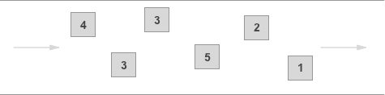

[AWS 101] What are SNS and SQS
Briefly note what AWS SNS and SQS services do and their use cases

Amazon Simple Queue Service (SQS) and Amazon Simple Notification Service (SNS) may look similar.
But in reality, they are quite different.
To better clarify the differences between the two, let’s compare the notes on both services side by side.
AWS SNS
Full name is: Amazon Simple Notification Service
The publisher system can use Topics to distribute event messages to a large number of subscriber systems for parallel processing.
The subscribers include:
- Amazon SQS
- AWS Lambda function
- HTTPS endpoint
- Amazon Kinesis Data Firehose
The architecture looks like this:

Features:
- Send real-time messages to all subscribers.
- Do not retain sent messages.
- Follow the Publish–subscribe pattern.
AWS SQS
Full name is: Amazon Simple Queue Service (SQS)
It is a fully managed message queue service.
Messages are sent to a queue and processed by the recipient who retrieves them.
It is a Serverless solution, but the executor can be either Lambda function or non-Serverless projects like Laravel.
Type
Two types of queues are provided to cater to different application requirements:
Standard Queue
The application can handle messages that arrive more than once and are not ordered sequentially.
- Unlimited Throughput: Standard queues support nearly unlimited transactions per second (TPS) for each API action.
- At-Least-Once Delivery: A message is guaranteed to be delivered at least once, but occasionally, multiple copies of the message may be delivered.
- Best-Effort Ordering: Messages are occasionally not delivered in the exact order they were sent.

FIFO Queue
When the order of operations and events is crucial or duplicates are not acceptable:
- High Throughput: By default, FIFO queues support up to 300 messages per second (300 send, receive, or delete operations per second).
- Exactly-Once Processing: Messages are delivered exactly once and remain available until the consumer processes and deletes them.
- First-In-First-Out Delivery: Messages are strictly delivered and received in the order they were sent (First In, First Out - FIFO).

Poll
Short polling
This method is similar to someone repeatedly asking you if there is any job available, even if there is no job.
You will get immediate results after each inquiry, even if the queue is empty.
However, to ensure you receive the latest status, you need to keep querying continuously.
Long polling
After making a request, you will not receive an immediate response unless there is a timeout or a message in the queue.
This approach minimizes additional polling to reduce costs while ensuring the fastest possible reception of new messages.
When the queue is empty, a long-polling request for the next message can wait for a maximum of 20 seconds.
Features:
- The receiver actively polls messages.
- A queue can only be associated with a single consumer.
- The message is deleted only after the consumer responds with the completion of the processing.
Difference between SNS and SQS
SNS
When new content is updated, event notifications are sent to all subscribers.
It follows a push-based architecture where messages are automatically pushed to the subscribers.
In simple terms, it is a broadcast notification.
SQS
Separating queue tasks from the codebase involves a Pull-Based architecture
Consumers are responsible for pulling messages from the queue and processing them on their own.
In simple terms, it is a Queue
Here’s an example of how these features and architectures can be combined:
1. Methods for creating an SNS Topic and SQS:
- Access the SNS service and create an SNS topic.
- Access the SQS service and create an SQS queue.
- Subscribe the newly created SQS queue to the SNS topic just created to retrieve podcast content.
- In the SQS Dashboard, select the target SQS queue.
- Click on the
Actiondropdown menu and chooseSubscribe to Amazon SNS topic. - Select the topic and click “Save.”
2. Simulate sending a message from SNS
- 到 SNS Topic 頁面並選擇 Topic 後，點選右上角
Publish message - 輸入測試用的內容，並按下
Publish message
3. Confirm if the subscription message has been received
After publishing a message in SNS, all endpoints subscribed to the topic should receive it.
- Open the SQS page and select the SQS queue that is subscribed to the topic.
- Click on
Send and receive message. - ÂæÄScroll down to the “Receive messages” section and select
Poll for Messages. - Once successful, you will see a list of messages appearing below, and you can click on them to view detailed content.
Reference source: Send Fanout Event Notifications